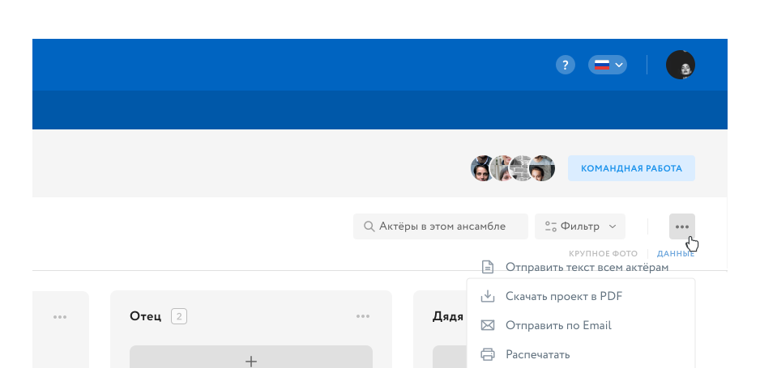
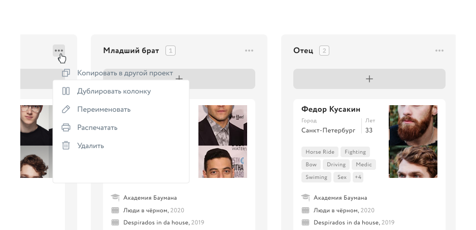
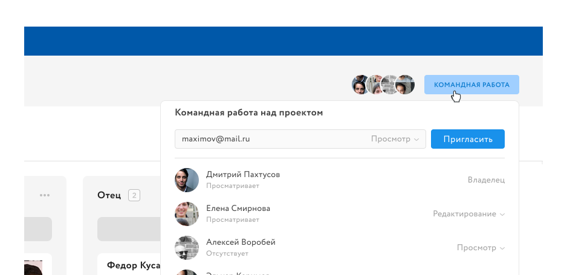
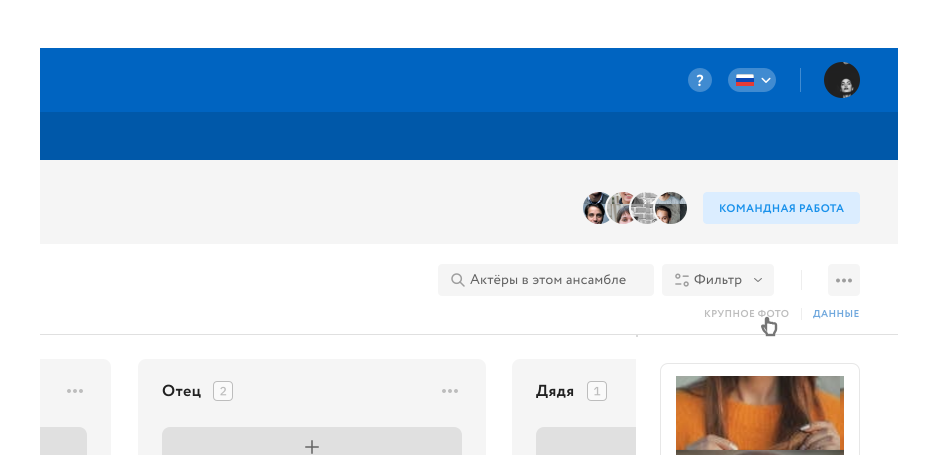

Шаг 1 из 13

Создание проекта
Для того, чтобы создать свой первый проект, нажмите на кнопку «Создать проект»
и пройдите все шаги, которые вам будут предложены.
и пройдите все шаги, которые вам будут предложены.

Управление списком проектов
В этом меню, вы можете выбрать действие, которое хотите совершить с одним или
несколькими проектами. Разверните меню, выберите действие и карточки с проектами
перейдут в нужный режим: сортировка, редактирование, удаление.
несколькими проектами. Разверните меню, выберите действие и карточки с проектами
перейдут в нужный режим: сортировка, редактирование, удаление.
Добавление актёра в колонку
В любой из колонок, нажмите на показанную выше кнопку, чтобы вызвать меню
добавления актёра. У вас будет возможность найти и добавить актёра через поиск, из
своего избранного или еще не зарегистрированного в нашем сервисе.
добавления актёра. У вас будет возможность найти и добавить актёра через поиск, из
своего избранного или еще не зарегистрированного в нашем сервисе.
Перемещение карточек актёров
Вы можете перемещать карточки актёров простым перетаскиванием. Для этого, зажмите
левую кнопку мыши на нужной карточке и не отпуская, перетяните её в другую колонку.
левую кнопку мыши на нужной карточке и не отпуская, перетяните её в другую колонку.
Быстрые действия с актёром
У каждой карточки актёра, есть меню быстрых действий. Воспользовавшись им, вы
сможете перейти к просмотру его анкеты, начать чат, добавить актёра в избранное
или удалить его из проекта.
сможете перейти к просмотру его анкеты, начать чат, добавить актёра в избранное
или удалить его из проекта.

Меню действий с конкретным актёром
Отсюда, у вас будет возможность отправить текст роли конкретному актёру, выбрав
соответствующий пункт меню. Так же, из этого меню, можно переместить выбранного
актёра в другой проект.
соответствующий пункт меню. Так же, из этого меню, можно переместить выбранного
актёра в другой проект.

Действия с проектом
Из этого меню, вам будет доступен ряд полезных возможностей, которые можно
совершить над всем проектом. Так же, вы сможете продублировать уже существующий
проект со всеми настройками или отправить его в архив.
совершить над всем проектом. Так же, вы сможете продублировать уже существующий
проект со всеми настройками или отправить его в архив.

Меню действий с актёрами в колонке
В этом меню, вы можете совершить ряд дейсвтий над самой колонкой или над всеми
актёрами в выбранной колонке. Например, колонку можно полностью скопировать в
другой проект или создать еще одну такую же колонку, в этом проекте.
актёрами в выбранной колонке. Например, колонку можно полностью скопировать в
другой проект или создать еще одну такую же колонку, в этом проекте.
Меню действий с ансамблями ролей
Все действия с ансамблями ролей, совершаются из этого меню. В нём, вы сможете
создать новый ансамбль, изменить существующий или удалить ненужный. Наведя курсор
на любой ансамбль в этом списке, вам будет показано меню всех действий над ним.
создать новый ансамбль, изменить существующий или удалить ненужный. Наведя курсор
на любой ансамбль в этом списке, вам будет показано меню всех действий над ним.

Командная работа над проектом
Чтобы сделать проект командным, достачно пригласить хотя бы одного человека. Вы
сможете управлять ролями всех участников команды, приглашать новых и исключать
существующих. Так же, отсюда можно приглашать в проект по ссылке.
сможете управлять ролями всех участников команды, приглашать новых и исключать
существующих. Так же, отсюда можно приглашать в проект по ссылке.

Переключение на крупные фото актёров
В правом верхнем углу рабочей области проекта, вы найдете переключатель, который
позволяет переходить между режимом просмотра карточек актёров с крупными фото
или с обычными.
позволяет переходить между режимом просмотра карточек актёров с крупными фото
или с обычными.
Свернуть панель со списком проектов
Нажатием на эту кнопку, вы сможете свернуть или развернуть панель со списком
проектов, чтобы дать себе больше пространства в рабочей области. Такая возможность
будет актуальна для владельцев небольших мониторов или ноутбуков.
проектов, чтобы дать себе больше пространства в рабочей области. Такая возможность
будет актуальна для владельцев небольших мониторов или ноутбуков.

Повтор обучения
Если вы что то забудете, ничего страшного. Вы всегда можете повторить это обучение.
Разверните меню справки и нажмите кнопку «Повторить обучение»
Разверните меню справки и нажмите кнопку «Повторить обучение»